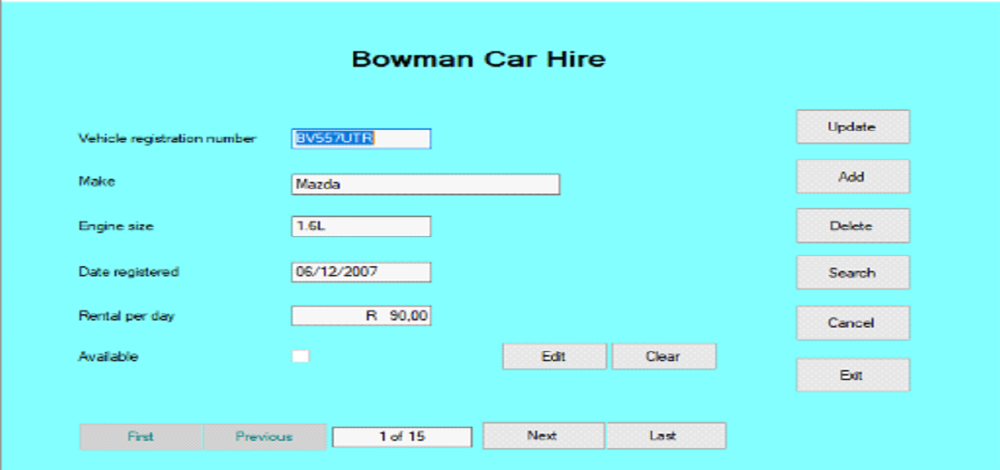
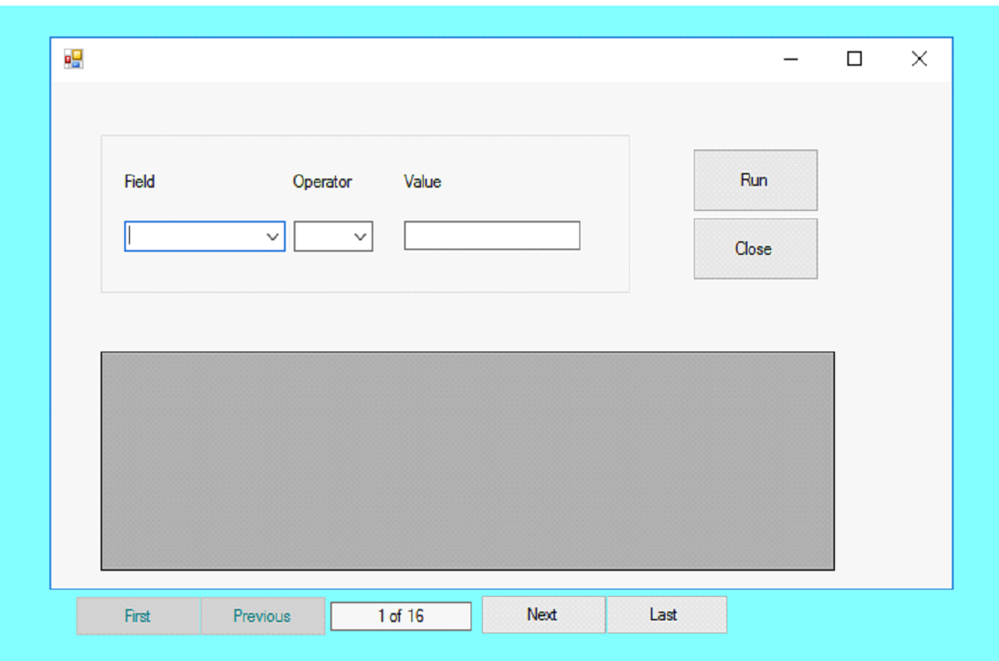
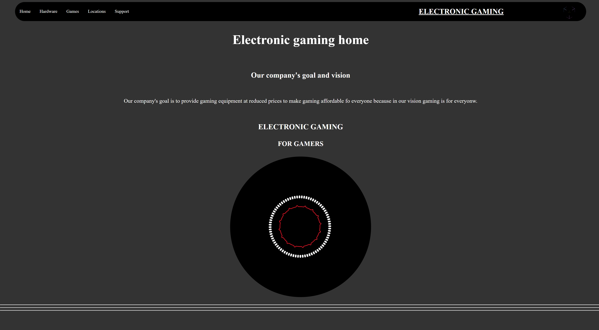
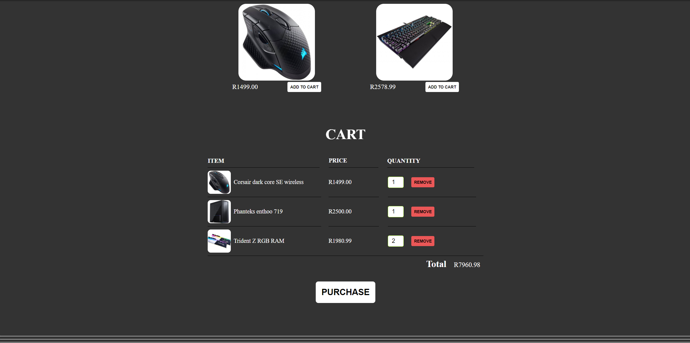
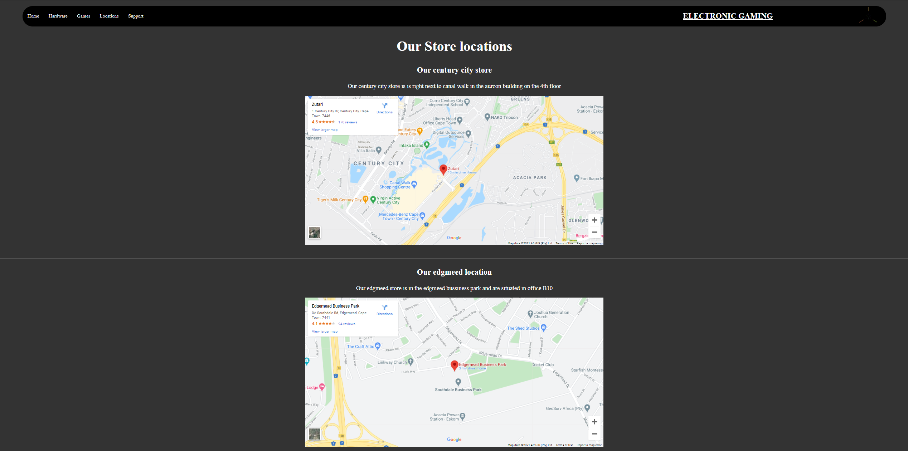
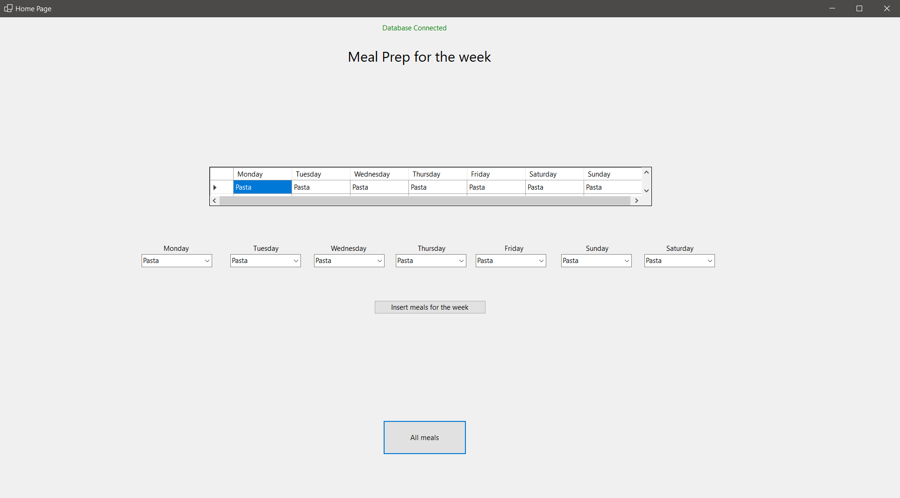
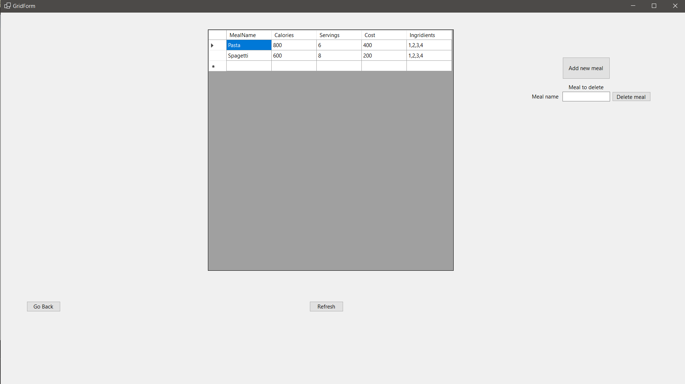

Intro
My name is Karl Jens Henkel and I am passionate about code and I.T
All my life I have been interested in all things computers.
I studied software development and am most knowledgeable with C#, HTML, CSS and JavaScript however this is not my limit. I love to learn and expand my knowledge constantly.
My work
Car hire databse application


The following project was a College project where I created a C# application that would connect and work with SQl Server management studio and manage, display and search the SQL Database. Click here to be directed to the GitHub page
Computer store website



This website was a college project where we interviewd a client and built their website according to their requests and requirements Using HTML, CSS and Java script.
Currently working on
Meal prep app


This personal project is aimed to be used for preparing a weak meal plan. Currently it is able to manage save meals entered by the user and all the necessary information such as calories, servings, cost and ingridients.
And more on my GitHub
About Me
Extra information about me:
I first touched lightly on programming when I was in grade 10 learning some basic Java, the feeling it gave me was like no other I ever felt before, then and there I knew what I wanted to do for the rest of my life.
I studied programming at IStudent academy (a microsoft learning partner) eager to get into the real world of programming as soon as possible. I achieved my MCSA in Web Applications which consists of HTML, CSS, Java script, C#, and ASP.NET as well as got qualified for querying transact SQL data.
Contact
E-mail:
karljhenkel@gmail.com
Cell:
081 748 4517
GitHub